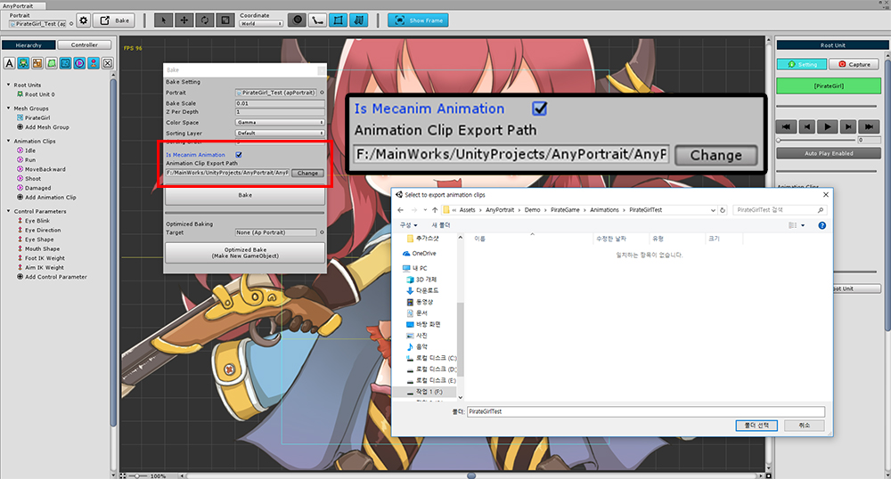
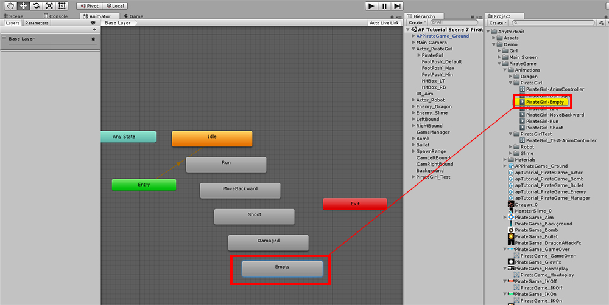
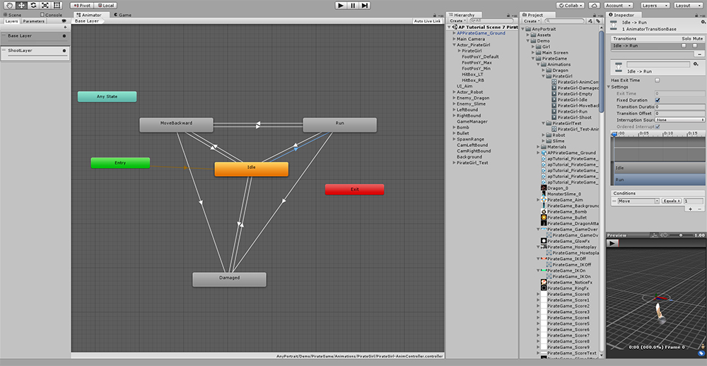

AnyPortrait > 메뉴얼 > 메카님과 연동하기
메카님과 연동하기
1.0.4
게임 제작할 때, 애니메이션을 제작하는 과정에서 스테이트 머신을 이용한 방법이 쓰이곤 합니다.
유니티에서는 메카님(Mecanim) 기능이 그 역할을 합니다.
기존에 애니메이션을 일일이 스크립트로 제어하는 것과 달리 애니메이션 전환 방식이 스테이트 머신으로 동작하는 방식입니다.
1.0.4 버전부터 AnyPortrait에서도 유니티 메카님과 연동하여 애니메이션을 제어하는 기능이 지원됩니다.
Animator 컴포넌트를 활용한 메카님 시스템은 기본적으로 유니티의 휴머노이드(Humanoid) 3D 모델에 가장 적합합니다.
따라서 메카님의 모든 기능이 연동되는 것이 아니므로 이를 참고하시길 바랍니다.

먼저 AnyPortrait에서 애니메이션들을 제작합니다.
기존의 방식대로 제작하면 됩니다.

Bake 다이얼로그에서 "Is Mecanim Animation"에 체크를 합니다.
제작한 애니메이션을 변환하여 Animation Clip으로 저장해야하기 때문에, 에셋들이 저장될 경로를 설정합니다.

메카님을 사용하는 방식으로 저장하면 자동으로 Animator 컴포넌트가 추가됩니다.
Animator 컴포넌트가 처음 추가되는 경우 자동으로 Animation Controller도 생성됩니다.

Animator 에디터로 열면 (1) 자동으로 스테이트들이 생성된 것을 보실 수 있습니다.
(2) 각각의 스테이트의 Motion이 되는 Animation Clip들은 설정했던 경로에 생성되어 저장됩니다.

이때, 주의할 것이 있습니다.
AnyPortrait는 메카님의 "비어있는 스테이트"를 인식하지 못하는 문제가 있습니다.
따라서 Empty라는 이름의 생성된 Animation Clip이 포함된 스테이트를 사용해야합니다.
"비어있는 스테이트"를 사용하고자 할 때에는 꼭 Empty라는 이름의 Animation Clip을 Motion으로 사용하는 스테이트를 만들어서 사용하시길 바랍니다.

Animator 에디터에서 Transition등을 설정하여 Animator를 편집합니다.
(Sub-State Machine과 Blend Tree는 정식으로 지원하지 않습니다.)
Animator 에 레이어 추가하기
여러 개의 애니메이션을 레이어로 설정하여 동시에 실행하면 복합적인 연출이 가능합니다.
달리거나 점프를 하면서 총을 쏘는 공격을 하는 등의 애니메이션이 가능해집니다.
AnyPortrait의 기존 애니메이션 스크립트에서도 레이어 기능을 지원하며, 메카님에서도 마찬가지입니다.
다음의 방식대로 레이어를 추가하고 설정하면 됩니다.

Animator에서 레이어를 추가하고 스테이트 머신을 구성합니다.
기본적으로 "레이어가 병합이 안되는 상태"를 위해서 Empty 스테이트를 만들어두는 것이 좋습니다.
위에서 언급했듯이 Empty라는 이름의 Animation Clip을 사용하여 스테이트를 만듭니다.
Blending과 Weight도 설정합니다.

apPortrait의 Inspector에서 Mecanim Settings 항목들을 확인합니다.
여기서 메카님 연동 정보를 수정해야합니다.
(1) Refresh Layers 버튼을 누릅니다.
(2) 방금 만든 레이어가 추가되는 것을 볼 수 있습니다.
Refresh Layers 버튼은 레이어가 추가, 삭제되거나 Blending 방식이 변경된 경우 항상 눌러야 합니다.
메카님과 연동하는 경우 주의해야할 점
AnyPortrait를 메카님과 연동할 때 다음의 주의 사항들이 있습니다.
앞서 서술한 내용들을 포함합니다.
- 메카님의 Empty State를 사용할 수 없으며, 필요한 경우 같이 생성된 Empty라는 Animation Clip을 Motion으로 설정한 스테이트를 이용해야합니다.
- Sub-State Machine와 Blend Tree를 지원하지는 않습니다.
- 메카님과 연동한 이후에는 AnyPortrait에서 제공하는 애니메이션 스크립트 함수를 이용할 수 없습니다. Animator를 참조하여 직접 함수를 호출하세요.
- 애니메이션 레이어를 추가하거나 변경한 경우, Inspector에서 Refresh Layers 버튼을 눌러서 레이어 정보를 갱신합니다.
- 기존 애니메이션에 다른 애니메이션을 레이어로 추가하여 병합하고자 할 때, 병합되지 않아야 하는 객체들에 대한 타임라인 레이어가 존재해서는 안됩니다.
(예: 달리는 모션 + 상체 모션인 경우, "상체 모션" 애니메이션에는 다리 객체에 대한 타임라인 레이어가 없어야 합니다.)
- 메카님으로 애니메이션을 제어하는 경우, apPortrait의 위치가 (0, 0, 0)으로 고정됩니다. GameObject를 새로 만들어서 상위에 두어 Transform을 제어하시길 바랍니다.